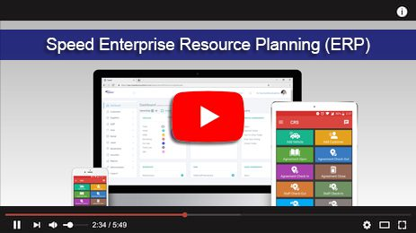

Get in Touch
Real Time Impact of Operations on Financial Books
SPEED FINANCIAL SYSTEM (FS)

SPEED FINANCIAL SYSTEM (FS)
No Mistakes In Unified Financial System When Transferring Data
Keeping data intact and secure is the major concern of businesses these days. Data is precious for them. So, companies endeavor to ensure the health of data in many ways. This is an expensive and time-consuming concern, no doubt.
However, besides several methods, incorporating similar and unified Financial System (FS) is too important. Unified Financial System means all the operations, either front end or back end, should be dealt with the same software.
Shortcomings Of Incompatible Solutions
If your rental business is operating with different solutions for different operations, then be ready to face shortcomings anytime. Some salient disadvantages that you may face would be;
- False mapping among solutions will lead to distorted data and mistakes.
- In the case of different solutions, there will be a considerable difference in the data format in front office solutions and back-office solutions.
- You may face “update” incompatibility. For instance, your front office solution is updated by the software provider but the back office software is still an older version that is supported by a different company.
- Data flow will be greatly interrupted time and again.
- Lack of integrable features will lead to a situation where you will find it hard to move efficiently.
Why Choose Speed Financial System (FS) For Your Rental Business?
Choosing a unified Financial System would lead to an amazingly efficient performance of your business. Besides being integrable there are several benefits that you will witness once you have adopted Speed Financial System. With a unified Financial System, you will be able to;
- You will be able to provide more meaningful information to your customers as soon as possible.
- At the end of tenure either its day or the month, you will be able to fetch some viable insights and reports.
- The more integrable system means more efficient and workable strategies. On the other hand, fruitful strategies will boost your business’s revenue.
- Simultaneously updated solutions will never lead you to complicated situations due to false mapping among software.
- Enhanced compatibility will ensure the uninterrupted flow of data and hence creating a loop of excellence in operations and reporting.
In the end, you will witness the minimum possible mistakes in information and insights. This will lead to accurate and timely decisions.
Speed Financial System (FS) – Eliminates Mistakes In Your Data
Hire Speed Financial System (FS) solutions and go freely and smoothly. Highly professional and immediately available support will never let you down. So, be confident in your choice and go for the world’s most demanded solution for your rental business, Speed Financial System.
Let’s get you Started
If you want to know more about Speed Financial System (FS), let’s get connected.